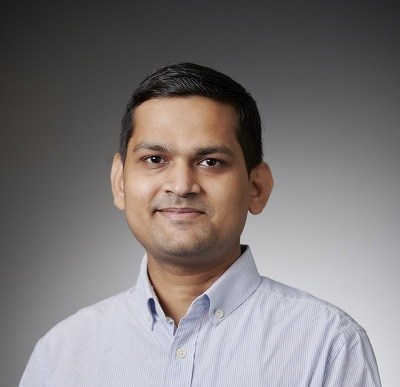

- Transit automated data (AFC, APC, AVL) mining
- Transit route choice
- Transit assignmnet
- Transit network design
- Transit scheduling
- Transit reliability
- Railway planning
- Auto rickshaw planning

About Me
Hello!, I'm an assistant professor in the Department of Civil Engineering at IIT Delhi. I got my Ph.D.in Civil Engineering from the University of Minnesota at Twin Cities, where I was advised by Alireza Khani.
In general, I'm interested in researching public transit and its integration with emerging technologies. Specifically, I'm interested in problems associated to
- Transit service operations, planning and control
- Emerging public transit technologies and business models
- Transit electrification
- Ridesharing
- Autonomous vehicles
- Drones
- Park-and-ride
The methodologies that find applications in my research are large-scale data analytics, optimization, uncertainty modeling, and mechanism design. If you'd like to chat about any of the above topics, please email me at [LAST NAME]372@umn.edu.
Join my research group: I am seeking highly motivated Ph.D. and M.S.(R) students. If you are interested, please check here if you will be a good fit.
 LICENSED UNDER CC BY-SA 2015-2021.
LICENSED UNDER CC BY-SA 2015-2021.